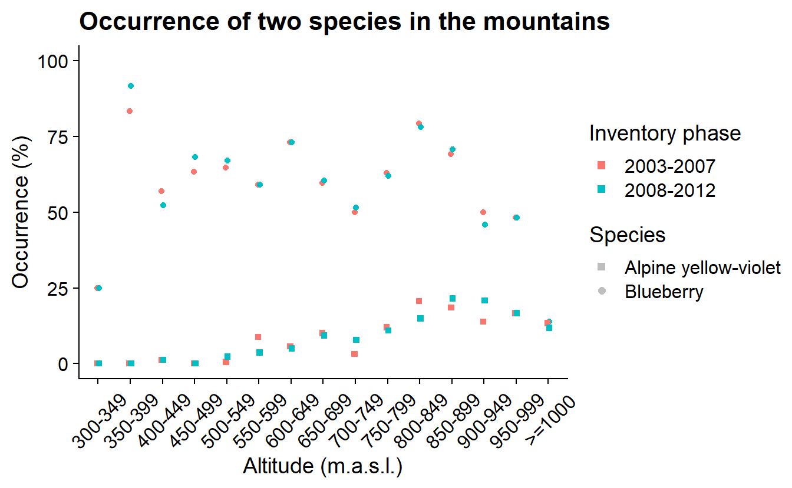

Chapter 8 Query data from NILS: blueberry and mountain violet occurrence in the alpine region
# Set up
library(jsonlite)
library(dplyr)
library(tidyr)
library(conflicted)
conflicts_prefer( dplyr::select, dplyr::filter)
library(glue)
library(ggplot2)
library(sf)Following with NILS data we will now illustrate another example, this time from the report Skog & Mark 2015 (Naturvårdsverket 2015). In this example we reproduce the analys done in the first chapter with the aim to compare presence of two species at different altitudes in the mountain range.
8.1 Query data
In this case we query the endpoint ‘SmaprovytaArter’ that contains the occurrence of different species per sample area.
urlApi <- 'https://landskap.slu.se/api/nils/api/'
endpoint <- 'SmaprovytaArter'
years <- paste0('Ar=',c(2003:2012), collapse = '&')
region <- 'BioGeoRegion=Alpin'
pyUrl <- url(glue('{urlApi}{endpoint}?{years}&{region}'))
pyGet <- fromJSON(pyUrl)
py <- pyGet$data |>
mutate(uuid = glue('{rutaNummer}-{provytaNummer}')) |>
mutate_at(vars(uuid, vetenskapligtNamn), list(factor))
pySpp <- py |>
group_by(uuid, ar) |>
reframe(coordNS = unique(koordNS),
coordEW = unique(koordEW),
presBB = ifelse("Vaccinium myrtillus" %in% vetenskapligtNamn, 1, 0),
presAV = ifelse("Viola biflora" %in% vetenskapligtNamn, 1, 0)) |>
as.data.frame()In the same way we query NILS, there are many other sources of data. We query opentopodata.org the obtain the altitude at specific coordinates. But first we need to convert NILS sample areas coordinates into a coordinate system that this new service can understand (WGS84). And we want to make the query only one per sample area, as they wont go anywhere between sampling events.
pySf <- py |>
group_by(uuid) |>
reframe(coordNS = unique(koordNS),
coordEW = unique(koordEW)) |>
rowwise() |>
mutate(geom = st_sfc(list(st_point(c(coordEW, coordNS))),
crs = st_crs(3006))) |> # SWEREF99 TM
st_as_sf() |>
st_transform(st_crs(4326)) # WGS84
pySf$elevation <- NA
locations <- st_coordinates(pySf) |>
as.data.frame() |>
rename("latitude" = Y,
"longitude" = X)We also want to iterate the query as this service has a quota of max 100 locations per call.
nLocations <- nrow(locations)
queryLimit <- 100
lChunks <- split(seq(nLocations), ceiling(seq(nLocations)/queryLimit))
urlAlt <- "https://api.opentopodata.org/v1/"
endpoint <- "eudem25m"
for (l in seq(length(lChunks))) {
loc <- locations[lChunks[[l]],] |>
mutate("xy" = glue("{round(latitude,5)},{round(longitude,5)}"))
loc <- paste0(loc$xy, collapse = "|")
elevGet <- url(glue("https://api.opentopodata.org/v1/eudem25m?locations={loc}"))
elevation <- fromJSON(elevGet)
elevation <- elevation$results
pySf$elevation[lChunks[[l]]] <- elevation$elevation
}We put everything together (join) and summarise the proportion of sample areas per inventory phase and elevation group.
pySf$elevationBin <- cut(pySf$elevation,
breaks = c(seq(300,1000, 50),Inf),
include.lowest = TRUE, right = FALSE)
elevBinLabel <- c("300-349","350-399","400-449","450-499","500-549","550-599",
"600-649","650-699","700-749","750-799","800-849","850-899",
"900-949","950-999",">=1000")
pySpp$invPha <- ifelse(as.numeric(as.character(pySpp$ar)) > 2007,
"2008-2012", "2003-2007")
pySum <- pySpp |>
left_join(st_drop_geometry(pySf)) |>
group_by(invPha, elevationBin) |>
reframe(count = n(),
sumPresBB = sum(presBB),
sumPresAV = sum(presAV)) |>
mutate(occBB = sumPresBB/count*100,
occAV = sumPresAV/count*100)and finally, we create a beautiful plot.
ggplot(pySum, aes(x = elevationBin, y = variable)) +
geom_point(aes(y = occBB, col = invPha),
position = position_dodge(0.1),
shape = 19) +
geom_point(aes(y = occAV, col = invPha),
position = position_dodge(0.1),
shape = 15) +
labs(title = "Occurrence of two species in the mountains",
y = "Occurrence (%)", x = "Altitude (m.a.s.l.)",
color = "Inventory phase") +
### add a dummy dataset for the shape legend
geom_point(aes(shape = rep(c('Blueberry','Alpine yellow-violet'), 15),
y = occBB), colour = NA) +
guides(color = guide_legend(override.aes = list(shape = 15, size = 2)),
shape = guide_legend("Species",
override.aes = list(shape = c(15,19),
color = "grey", size = 2))) +
ylim(0, 100) +
scale_x_discrete(labels = elevBinLabel) +
theme(axis.text.x = element_text(angle = 45, vjust = 0.5))
The resulting graphs show the percentage of NILS sample areas with blueberries (Vaccinium myrtillus) or alpine yellow-violet (Viola biflora) in the mountains at different altitudes for both inventory phases (2003–2007, 2008–2012).